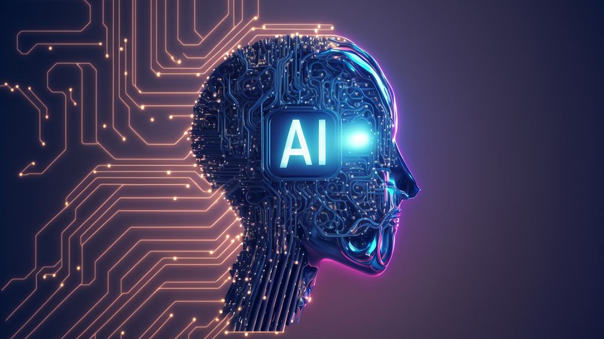

¿Qué es la Inteligencia Artificial?
La Inteligencia Artificial (IA) es una rama de la informática que busca crear sistemas capaces de realizar tareas que normalmente requieren inteligencia humana, como el aprendizaje, el razonamiento y la resolución de problemas. En este sitio vas a encontrar enlaces, videos e imágenes para conocer mejor cómo funciona y dónde se aplica.

Conceptos clave
Machine Learning
Permite a las máquinas aprender de datos sin ser programadas explícitamente para cada tarea.
Deep Learning
Usa redes neuronales artificiales inspiradas en el cerebro humano para procesar información compleja.
Procesamiento del Lenguaje
Permite a las máquinas entender y generar lenguaje humano de forma natural.
Historia de la IA
| Año | Hito | Descripción |
|---|---|---|
| 1950 | Test de Turing | Alan Turing propone una prueba para medir la inteligencia de las máquinas. |
| 1956 | Conferencia de Dartmouth | Se acuña oficialmente el término "Inteligencia Artificial". |
| 1997 | Deep Blue | La IA de IBM vence al campeón mundial de ajedrez Garry Kasparov. |
| 2012 | AlexNet | Las redes neuronales profundas revolucionan el reconocimiento de imágenes. |
| 2022 | ChatGPT | Los modelos de lenguaje generativos llegan al público masivo. |